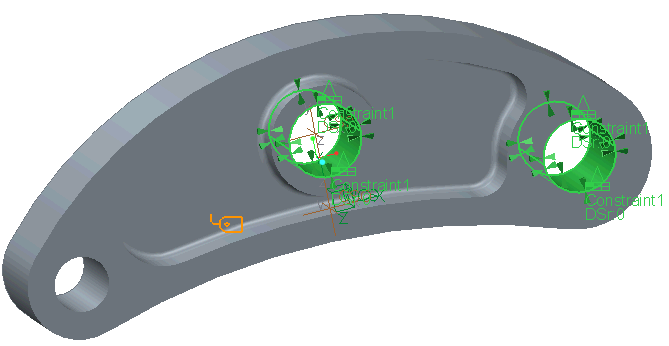
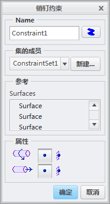
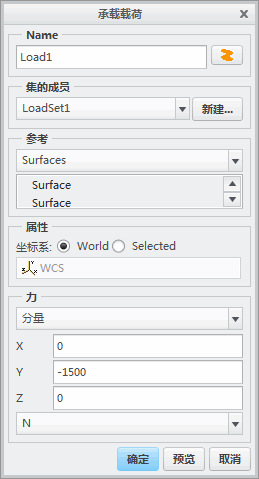
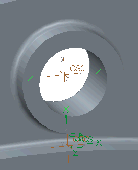

练习: 定义约束
目标
成功完成此练习后，您将能够：
- 在圆柱孔中定义销钉约束。
- 为静定的约束模型使用三点约束规则。
- 为这些模型使用“惯性释放”(Inertia Relief) 功能作为替代项。
- 查看约束硬化效果及相关错误。
假定背景
本例中，您将为准静态折弯载荷为 1500 N 的“铝”倾斜杠杆调查约束和载荷的影响。载荷是由圆柱孔内部放置的有间隙的钢条引起的。您需要关注杠杆的刚度和强度。
可使用完整装配的非线性接触分析对孔周围的应力状态进行准确的分析，同时考虑到钢条的公差和刚度 (几何和材料)。由于这样做会花费大量的资源和时间，您可以学习不同的类似解决方案来约束和加载零件。您可以使用这些解决方案判断实际上是最好和较差的加载条件。
“关闭窗口”(Close Window) “拭除未显示的”(Erase Not Displayed)
“拭除未显示的”(Erase Not Displayed) 
 Simulate_Modeling\Constraints
Simulate_Modeling\Constraints
 TILT_LEVER_CONSTRAINEFFECTS_SIM.PRT
TILT_LEVER_CONSTRAINEFFECTS_SIM.PRT
|
|
||
 |
请 Creo Parametric 用户打开 TILT_LEVER_CONSTRAINEFFECTS.PRT。 | |
|
|
||
-
任务 1. 使用预定义的销钉约束定义销钉约束。
1. 在功能区中，选择“主页”(Home) 选项卡。
2. 在“约束”(Constraints) 组中，单击“销钉约束”(Pin Constraint) 。将出现“销钉约束”(Pin Constraint) 对话框。
3. 按住 CTRL 键并在模型上选择两个较大的孔，如图所示。

4. 确认轴向平移和旋转是否已设置为自由，如图所示。
未在销钉约束中固定轴向平移，因为这样会使孔曲面上的材料由于泊松效应 (横向应变效应) 而无法轴向缩短或延伸。这样做会人为地硬化杠杆，尤其是在弯矩最大的中心孔处。
5. 单击“确定”(OK)。
6. 在功能区中，选择“主页”(Home) 选项卡。
7. 在“约束”(Constraints) 组中，单击“位移”(Displacement)
 。将出现“约束”(Constraint) 对话框。
。将出现“约束”(Constraint) 对话框。
8. 从“参考”(References) 下拉菜单中选择“点”(Points)。
9. 在模型上选择 PNT1。
10. 在“平移”(Translation) 部分，单击“自由平移”(Free Translation)
 ，用于 X 和 Y 平移。
，用于 X 和 Y 平移。
11. 单击“确定”(OK)。
在静态分析中，Simulate 需要模型至少是静定的。模型也可以为冗余约束。为防止整个杠杆沿轴承孔轴滑动，会约束 WCS Z 方向上杠杆曲面上的一个任意点。由于未在 Z 方向上施加任何力，因此这样做不会引起奇点。
-
任务 2. 定义承载载荷。
1. 在功能区中，选择“主页”(Home) 选项卡。
2. 在“载荷”(Loads) 组中，单击“承载”(Bearing) 。将出现“承载载荷”(Bearing Load) 对话框。
3. 在模型上，选择小孔的一半曲面。对话框中列出了两个曲面。
4. 在“力”(Force) 部分的 Y 字段中键入 –1500。完成的对话框如图所示。
5. 单击“确定”(OK)。

-
任务 3. 网格化模型。
1. 在功能区中，选择“精细模型”(Refine Model) 选项卡。
2. 从 AutoGEM 组中单击AutoGEM
 。将出现 AutoGEM 对话框。
。将出现 AutoGEM 对话框。
3. 单击“创建”(Create)。请注意，已创建了大约 1500 个实体元素。
4. 在所有对话框中单击“关闭”(Close)，当出现保存网格的提示时，单击“否”(No)。
-
任务 4. 定义并运行静态分析。
1. 在功能区中，选择“主页”(Home) 选项卡。
2. 在“运行”(Run) 组中单击“分析和研究”(Analyses and Studies)
 。将出现“分析和设计研究”(Analyses and Design Studies) 对话框。
。将出现“分析和设计研究”(Analyses and Design Studies) 对话框。
3. 单击“文件”(File) > “新建静态分析”(New Static)。将出现“静态分析定义”(Static Analysis Definition) 对话框。
4. 完成以下步骤：
- 在“名称”(Name) 字段中键入 tilt_lever_pinconstrained。
- 选择在“约束集/元件”(Constraint Set/Component) 和“载荷集/元件”(Load Set/Component) 部分中显示的约束集和载荷集。
- 单击“收敛”(Convergence) 选项卡，然后从“方法”(Method) 下拉菜单中单击“单通道自适应”(Single-Pass Adaptive)。
5. 单击“确定”(OK) 返回到“分析和设计研究”(Analyses and Design Studies) 对话框。
6. 单击“配置运行设置”(Configure Run Settings)
 。将出现“运行设置”(Run Settings) 对话框。
。将出现“运行设置”(Run Settings) 对话框。
7. 默认情况下，结果和临时输出目录被设置在工作目录中。两种分析都储存在此位置。单击“确定”(OK)。
8. 在“分析和设计研究”(Analyses and Design Studies) 对话框中选择刚刚定义的分析，然后单击“开始运行”(Start Run)
 。单击“是”(Yes) 以运行交互诊断。
。单击“是”(Yes) 以运行交互诊断。
9. 分析完成后，单击“显示研究状况”(Display Study Status)
 查看汇总报告。
查看汇总报告。
10. 仔细检查在汇总文件中显示的信息。请注意最关心的数量 (应力和变形) 的最大值。关闭所有对话框并返回至“分析和设计研究”(Analyses and Design Studies) 对话框。
-
任务 5. 创建结果窗口并检查结果。
1. 在“分析和设计研究”(Analyses and Design Studies) 窗口中选择 tilt_lever_pinconstrained。
2. 选择“结果”(Results) > “显示默认结果窗口”(Show Default Result Windows)。将出现三个默认结果窗口：
- von Mises 应力动画
- 位移量级条纹
- 主应力矢量
3. 查看以下内容：
- 在动画演示的结果中观察杠杆的移动和变形。销钉约束的轴承孔可以旋转，但无法在约束的方向上变形，因为它们已变得无穷硬。
- 在主应力矢量出图中，观察两个约束孔处的非现实主应力矢量。因为真实的轴承杆只能承载向前的压力，所以不可能存在垂直于孔曲面的拉伸应力。在外部的大轴承孔中，会观察到垂直于孔曲面的矢量不指向下方，而是定向为朝向左侧。原因是：理想化的销钉约束还在 WCS-X 方向上 (而不仅在 Y 方向上) 将通杆固定到孔内。
- 因此，约束附近的应力可能会不准确。
4. 单击“文件”(File) > “退出结果”(Exit Results) 返回至 Creo Simulate。在“消息”(Message) 对话框中单击“否”(No)。
5. 在“分析和设计研究”(Analyses and Design Studies) 对话框中，单击“关闭”(Close)。
6. 单击“文件”(File) > “管理会话”(Manage Session) > “拭除当前”(Erase Current) 以关闭显示的窗口，并从内存中拭除模型。
7. 出现拭除确认提示时，单击“是”(Yes)。
-
任务 6. 打开模型以开始三点约束建模方法。
第二种分析方法使用三点约束方法。应用三点约束的规则如下： - 这些点可位于模型曲面上的任何位置，但不允许共线。
- 将第一个点固定在所有平移方向上。
- 将第二个点固定在相对于穿过点 1 和点 2 的轴的两个正交方向上。
- 将第三个点垂直于穿过所有点的曲面固定。
1. 打开文件 TILT_LEVER_CONSTRAINEFFECTS_SIM.PRT。
-
任务 7. 定义三点约束。
1. 在模型上定位点 PNT0、PNT1 和 PNT2，如图所示。请注意，这些点不共线。
2. 在功能区中，选择“主页”(Home) 选项卡。
3. 在“约束”(Constraints) 组中，单击“位移”(Displacement)
。将出现“约束”(Constraint) 对话框。
4. 在“集的成员”(Member of Set) 部分中，单击“新建”(New)。将出现“约束集定义”(Constraint Set Definition) 对话框。
5. 在“名称”(Name) 字段中输入 3point。
6. 单击“确定”(OK) 返回到“约束”(Constraint) 对话框。
7. 从“参考”(References) 下拉菜单中选择“点”(Points)。
8. 在模型上选择 PNT2。
9. 在“平移”(Translation) 部分中，单击“固定”(Fixed)
 用于 X、Y 和 Z 平移。这是固定在所有平移方向上的第一个点。
用于 X、Y 和 Z 平移。这是固定在所有平移方向上的第一个点。
10. 单击“确定”(OK)。
11. 在功能区中，选择“主页”(Home) 选项卡。
12. 在“约束”(Constraints) 组中，单击“位移”(Displacement)
。将出现“约束”(Constraint) 对话框。
13. 从“参考”(References) 下拉菜单中选择“点”(Points)。
14. 在模型上，选择 PNT0。
15. 在“平移”(Translation) 部分，针对 X 平移单击“自由平移”(Free Translation)
。确认 Y 和 Z 平移已固定。这是固定在相对于穿过点 1 和点 2 的轴的两个正交方向上的第二个点。
16. 单击“确定”(OK)。
17. 在功能区中，选择“主页”(Home) 选项卡。
18. 在“约束”(Constraints) 组中，单击“位移”(Displacement)
。将出现“约束”(Constraint) 对话框。
19. 从“参考”(References) 下拉菜单中选择“点”(Points)。
20. 在模型上选择 PNT1。
21. 在“平移”(Translation) 部分，单击“自由平移”(Free Translation)
，用于 X 和 Y 平移。确认 Z 平移已固定。这是垂直于穿过所有点的曲面固定的第三个点。
22. 单击“确定”(OK)。
-
任务 8. 定义承载载荷。
1. 在功能区中，选择“主页”(Home) 选项卡。
2. 在“载荷”(Loads) 组中，单击“承载”(Bearing) 。将出现“承载载荷”(Bearing Load) 对话框。
3. 在“集的成员”(Member of Set) 部分中，单击“新建”(New)。将出现“载荷集定义”(Load Set Definition) 对话框。
4. 在“名称”(Name) 字段中键入 force_equilibrium。
5. 单击“确定”(OK) 返回到“承载载荷”(Bearing Load) 对话框。
6. 在模型上，选择小孔的一半曲面。对话框中列出了两个曲面。
7. 在“力”(Force) 部分的 Y 字段中键入 –1500。
8. 单击“确定”(OK)。
9. 在功能区中，选择“主页”(Home) 选项卡。
10. 在“载荷”(Loads) 组中，单击“承载”(Bearing) 。将出现“承载载荷”(Bearing Load) 对话框。
11. 在模型树上，选择中间孔的一半曲面。对话框中列出了两个曲面。
12. 在“力”(Force) 部分的 Y 字段中键入 3152.81。
13. 单击“确定”(OK)。
14. 在功能区中，选择“主页”(Home) 选项卡。
15. 在“载荷”(Loads) 组中，单击“承载”(Bearing) 。将出现“承载载荷”(Bearing Load) 对话框。
16. 在模型上，选择剩余的第三个孔的一半曲面。对话框中列出了两个曲面。
17. 在“力”(Force) 部分的 Y 字段中键入 -1652.81。
18. 单击“确定”(OK)。
19. 要查看模型中合成载荷，请单击“载荷”(Loads) 组下拉菜单并选择“查看总载荷”(Review Total Load)。将出现“合成载荷”(Load Resultant) 对话框。
20. 在“载荷”(Loads) 部分，单击“选择参考”(Select Reference)
 。
。
21. 在模型树中，展开“载荷/约束”和“载荷集”force_equilibrium。选择 Load1、Load2 和 Load3。
22. 在“选择”(Select) 对话框中，单击“确定”(OK)。
23. 在“合成载荷”(Load Resultant) 对话框中，单击“计算合成载荷”(Compute Load Resultant)。
24. 请注意，所有“合成载荷”值都近似为零。这确认了平衡承载载荷的正确值，并确认了模型处于平衡状态。单击“确定”(OK)。
-
任务 9. 定义并运行静态分析。
1. 在功能区中，选择“主页”(Home) 选项卡。
2. 在“运行”(Run) 组中单击“分析和研究”(Analyses and Studies)
。将出现“分析和设计研究”(Analyses and Design Studies) 对话框。
3. 使用定义的三点约束定义第一个静态分析。单击“文件”(File) > “新建静态分析”(New Static)。将出现“静态分析定义”(Static Analysis Definition) 对话框。
4. 完成以下步骤：
- 在“名称”(Name) 字段中键入 tilt_lever_3point。
- 在“约束集/元件”(Constraint Set/Component) 部分选择 3point/TILT_LEVER_CONSTRAINEFFECTS_SIM。如有需要，请取消选择任何其他约束集。
- 在“载荷集/元件”(Load Set/Component) 部分选择 force_equilibrium/TILT_LEVER_CONSTRAINEFFECTS_SIM。如有需要，请取消选择任何其他载荷集。
- 单击“收敛”(Convergence) 选项卡，然后从“方法”(Method) 下拉菜单中单击“单通道自适应”(Single-Pass Adaptive)。
5. 单击“确定”(OK) 返回到“分析和设计研究”(Analyses and Design Studies) 对话框。
6. 单击“配置运行设置”(Configure Run Settings)
。将出现“运行设置”(Run Settings) 对话框。
7. 默认情况下，结果和临时输出目录被设置在工作目录中。两种分析都储存在此位置。单击“确定”(OK)。
8. 在“分析和设计研究”(Analyses and Design Studies) 对话框中选择刚刚定义的分析，然后单击“开始运行”(Start Run)
。单击“是”(Yes) 以运行交互诊断。
9. 分析完成后，单击“显示研究状况”(Display Study Status)
查看汇总报告。
10. 仔细检查在汇总文件中显示的信息。请注意最关心的数量 (应力和变形) 的最大值。另请注意，合成载荷为零。关闭所有对话框并返回至“分析和设计研究”(Analyses and Design Studies) 对话框。
11. 在“分析和设计研究”(Analyses and Design Studies) 对话框中，使用惯性释放定义第二个静态分析。单击“文件”(File) > “新建静态分析”(New Static)。将出现“静态分析定义”(Static Analysis Definition) 对话框。
12. 完成以下步骤：
- 在“名称”(Name)字段中键入 tilt_lever_inertiarelief。
- 选择“惯性释放”(Inertia Relief)。请注意，约束集在“约束”(Constraints) 部分处于灰显状态。
- 在“载荷集/元件”(Load Set/Component) 部分选择 force_equilibrium/TILT_LEVER_CONSTRAINEFFECTS_SIM。如有需要，请取消选择任何其他载荷集。
- 单击“收敛”(Convergence) 选项卡，然后从“方法”(Method) 下拉菜单中单击“单通道自适应”(Single-Pass Adaptive)。
13. 单击“确定”(OK) 返回到“分析和设计研究”(Analyses and Design Studies) 对话框。
14. 单击“配置运行设置”(Configure Run Settings)
。将出现“运行设置”(Run Settings) 对话框。
15. 默认情况下，结果和临时输出目录被设置在工作目录中。两种分析都储存在此位置。单击“确定”(OK)。
16. 在“分析和设计研究”(Analyses and Design Studies) 对话框中选择刚刚定义的分析，然后单击“开始运行”(Start Run)
。单击“是”(Yes) 以运行交互诊断。
17. 分析完成后，单击“显示研究状况”(Display Study Status)
查看汇总报告。
18. 仔细检查在汇总文件中显示的信息。请注意最关心的数量 (应力和变形) 的最大值，以及合成载荷。关闭所有对话框并返回至“分析和设计研究”(Analyses and Design Studies) 对话框。
-
任务 10. 创建结果窗口并检查结果。
1. 使用以下输出文件夹创建三个显示 von Mises 应力的结果窗口：
- tilt_lever_pinconstrained
- tilt_lever_3point
- tilt_lever_inertiarelief
2. 查看以下内容：
- 请注意，通过约束产生的硬化效果已消失；您还会观察到，中心轴承孔周围的应力明显提高 (+50%)。完整的承载载荷会转移到上方的轴承孔半圆柱。将这些结果与使用销钉约束时的结果相比较。
3. 使用以下输出文件夹再创建三个显示主应力矢量的结果窗口：
- tilt_lever_pinconstrained
- tilt_lever_3point
- tilt_lever_inertiarelief
4. 查看以下内容：
- 三点约束与惯性释放的应力结果相同。
- 对于在力平衡中分析的模型，主应力矢量看上去更为合理，尤其在中心孔中。
5. 使用以下输出文件夹再创建三个显示位移量级的结果窗口：
- tilt_lever_pinconstrained
- tilt_lever_3point
- tilt_lever_inertiarelief
6. 比较它们之间的差异。
7. 请注意这些方法的优缺点：
- 柱坐标系/销钉约束
- 创建过程简单快捷，尤其是销钉约束。适合于冗余约束结构，这种结构在不考虑结构性刚度的情况下无法手动分析外力。
- 约束附近的结果不准确。约束的方向变得无穷硬。
- 三点
- 通过报告文件中的合成载荷可以检查力平衡是否正确。
- 此外，即使在力平衡正确的情况下，通过点约束的“热点”检查也可以进一步检查自由力矩。
- 位移已定义“零”点。
- 定义点约束的操作冗长乏味。
- 惯性释放
- 创建过程简单快捷 (无必需的约束定义)。
- 只能检查力平衡。自由力矩难以控制，因为未出现任何“热点”(没有约束能够防止零件变形出现用旋转加速度平衡的自由力矩)。
- 位移未定义“零”点。
8. 单击“文件”(File) > “退出结果”(Exit Results) 返回至 Creo Simulate。在“消息”(Message) 对话框中单击“否”(No)。
9. 在“分析和设计研究”(Analyses and Design Studies) 对话框中，单击“关闭”(Close)。
10. 单击“文件”(File) > “管理会话”(Manage Session) > “拭除当前”(Erase Current) 以关闭显示的窗口，并从内存中拭除模型。
11. 出现拭除确认提示时，单击“是”(Yes)。
练习就此结束。